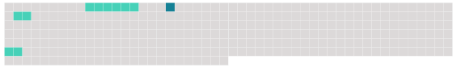

Longueur nb maillons : 4 mentions |
 |
Des pierrailles remplissaient les barbacanes des tours ; sur [les douze fenêtres de la façade] , il y [en] avait huit barrées par des planches ; les deux autres montraient des vitres bouillonnées, tremblant, à la moindre pression de la bise, dans leur réseau de plomb. Entre [ces fenêtres] , le crépi, tombé par écailles comme les squames d'une peau malade, mettait à nu des briques disjointes, des moellons effrités aux pernicieuses influences de la lune ; la porte, encadrée d'un linteau de pierre, dont les rugosités régulières indiquaient une ancienne ornementation émoussée par le temps et l'incurie, était surmontée d'un blason fruste que le plus habile héraut d'armes eût été impuissant à déchiffrer et dont les lambrequins se contournaient fantasquement, non sans de nombreuses solutions de continuité. [2 phrases] Des nids d'hirondelles oblitéraient le faîte des cheminées et les angles [des fenêtres] , et, sans un mince filet de fumée qui sortait d'un tuyau de briques et se tortillait en vrille comme dans ces dessins de maisons que les écoliers griffonnent sur la marge de leurs livres de classe, on aurait pu croire le logis inhabité : maigre devait être la cuisine qui se préparait à ce foyer, car un soudard avec sa pipe eût produit des flocons plus épais. |
 |
La ressource peut être téléchargée sur la page Ortolang
Si vous avez des questions ou vous voyez des erreurs, merci d'envoyer un mail à silvia.federzoni89@gmail.com
Site développé par S. Federzoni (contact)